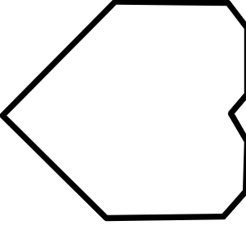
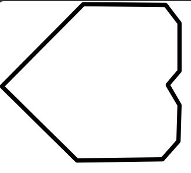
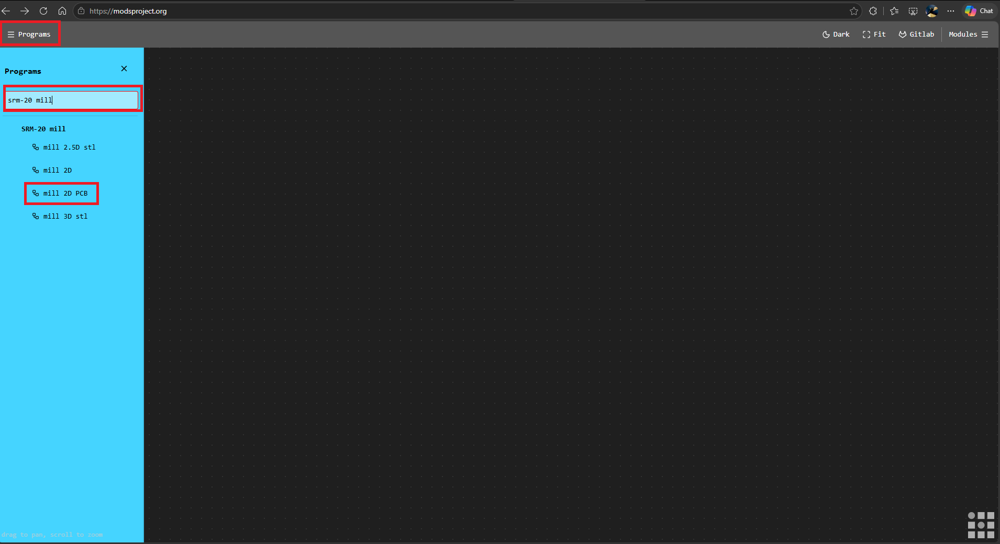
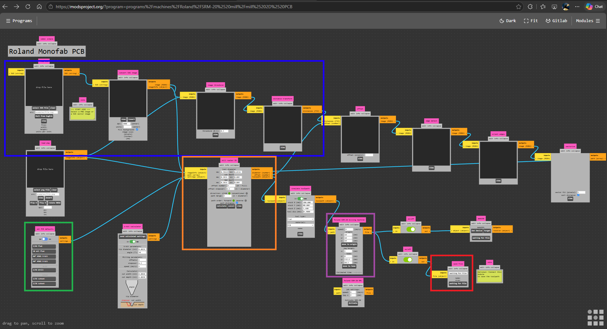

Procesamiento de SVG a RML con Mods
Este apartado constituye una continuación directa de nuestra documentación de diseño en KiCad. Una vez que hemos exportado los archivos necesarios de nuestras placas, el siguiente paso crítico en el proceso de fabricación digital con la fresadora Roland MonoFab (SRM-20) es transformar nuestros vectores en trayectorias de maquinado legibles (archivos .rml) utilizando la herramienta web Mods.
1. Verificación y Preparación previa en Inkscape
Antes de enviar cualquier diseño a la plataforma de maquinado, es fundamental asegurarnos de que los archivos vectoriales (específicamente el contorno de nuestra placa) cumplan con las condiciones geométricas adecuadas para evitar fallos físicos en el material.
1.1. Descarga y Sitio Oficial
Si detectas que el contorno de tu placa parece cortado o mal delimitado, se recomienda utilizar un editor de vectores. Para este propósito utilizamos Inkscape. Puedes acceder a su plataforma y obtener los instaladores desde su sitio oficial de Inkscape. No profundizaremos demasiado en el uso general del software, pero sí en una regla de oro para la manufactura.
1.2. Consideraciones Clave de Diseño Vectorial
- Todo dentro del lienzo: Es indispensable verificar que todos los vectores de corte y trazo se encuentren completamente dentro del área del lienzo de trabajo en Inkscape. De lo contrario, la herramienta de exportación podría omitir secciones o generar errores de geometría.
- Manejo de tolerancias: Es vital respetar márgenes y tolerancias adecuados en las pistas y contornos de la placa. Si los vectores están mal posicionados o demasiado justos, el cabezal de corte podría invadir zonas críticas y seccionar una pista por error.
| Vector Incorrecto (Cortado / Fuera de límites) | Vector Correcto (Alineado y dentro del lienzo) |
|---|---|
 |
 |
2. Introducción a la Plataforma Mods
Una vez que nuestros archivos vectoriales (SVG) están limpios y correctamente acotados, pasamos a Mods, una herramienta web basada en nodos ampliamente utilizada en entornos Fab Lab para la manufactura digital.
2.1. Acceso y Selección del Programa
- Ingresa al sitio oficial de la herramienta a través de su entorno web en Mods Community.
- Haz clic derecho en cualquier parte del espacio de trabajo para abrir el menú contextual, dirígete a la pestaña de Programs y dentro del buscador escribe
srm-20mil. - Selecciona la opción correspondiente a
mill 2d pcbpara desplegar el diagrama de nodos diseñado específicamente para el fresado de circuitos impresos en la SRM-20.

2.2. Vista General de la Interfaz de Nodos
Al cargar el programa, verás un conjunto interconectado de bloques o nodos que procesan la información de manera secuencial (desde la entrada del archivo hasta la generación del código de la máquina). A continuación, se presenta una vista general destacando con distintos colores las secciones clave en las que debemos enfocar nuestra atención durante el flujo de trabajo:
- 🔵 Azul: Módulo de entrada de archivos y visualización gráfica.
- 🟢 Verde: Configuración de unidades y selección de herramientas de corte.
- 🟠 Naranja: Parámetros de la herramienta, diámetros, número de pasadas y cálculo de trayectorias.
- 🟣 Morado: Control de origen, velocidades de avance y guardado final del archivo RML.
